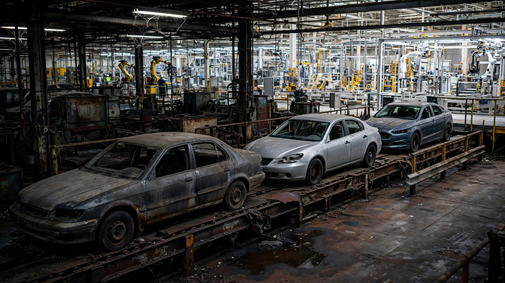

Ford Has 60 Recalls in 2026. The Morgue Already Knew Why.

Jeff Levine stood in front of a chart last week and said something unusual for a Ford executive defending 60 safety recalls in seven months: he was telling the truth. Ford’s 2026 and 2027 models account for just 3.3 percent of the company’s recall volume this year.[1] The other 96.7 percent comes from vehicles designed between 2013 and 2020, an era Ford has been trying to put in the rearview mirror since it killed the Focus, the Fiesta, the Taurus, and the Fusion and bet everything on trucks and SUVs.
I pulled the FARS data to see if the body count tells the same story. It does, and the numbers are violent. Ford vehicles with model years from 2013 through 2020 appear in 6,539 fatal crashes in the FARS database. Model year 2021 and newer totals two hundred and seventeen. That is a 30-to-1 ratio, and while some of that gap is simple exposure (older vehicles have accumulated more miles), the scale goes beyond what age alone explains.[2]
Ford leads all manufacturers in recall volume this year. Not by a little. By three to one over second-place Chrysler, which has 24, and over three to one against GM’s 19.[1] These are not fender-bracket adjustments or label misprints buried in the Federal Register. Headliners include a transmission software defect in Expedition, Navigator, Explorer, Aviator, and F-150 models that lets the vehicle roll away after you park it (NHTSA campaign 26V402), and a second-row seat in nearly 388,000 Explorers and Aviators that can tip or slide while you are driving, which is precisely the kind of surprise a family of four does not need at highway speed.[3]
Levine framed the numbers as progress, and in a narrow sense he earned it. JD Power’s Initial Quality Study shows Ford’s newest vehicles improving. Software-only campaigns, which Ford can patch over the air without a dealer visit, account for 8.4 million of the recalled vehicles industrywide this year; three-quarters of those get fixed by a file download that happens while the owner sleeps. Ford is building better cars in 2026 than it built in 2016.[1] But saying your newest products are clean while the decade of vehicles you already sold keeps catching fire, rolling away, and folding seats onto children is a confession dressed as a press release.
FARS data draws a blunter picture. Ford’s discontinued sedans alone: Focus, Taurus, Fusion, Fiesta, Crown Victoria, and their lesser siblings. They account for 8,992 deaths, or 25.7 percent of every fatal crash involving a Ford in the FARS window. Ford stopped making the Focus in 2018; its death rate sits at 2.52 per 100 million vehicle miles traveled. Axed in 2019, the Taurus sits at 2.74. Ford stopped selling these cars, but it could not stop the cars from being on the road, and it could not undo whatever engineering compromises the 2013–2020 design cycle baked into their structures, their restraint systems, and their propensity to show up in the wrong column of a toxicology report.[2]
Compare what Ford sells now, and the gap is not subtle. Bronco sits at 0.05, EcoSport and Transit at 0.14 each, the F-250 at 0.43. These are vehicles designed with a decade of additional crash data, structural simulation, and the institutional memory of watching the Focus and the Fiesta rack up body counts that made accountants rethink the sedan business case before engineers got the chance.[2]
The counterargument deserves its full weight. A 30:1 ratio of deaths between 2013–2020 vintages and 2021-plus vintages is partly an artifact of exposure. A 2014 F-150 has been on the road for twelve years; a 2022 F-150 has been on the road for four. Fleet miles accumulate, crashes follow, and older vehicles are over-represented in any fatality database because they have had more time to get hit. When the 2021-plus cohort ages, the ratio will narrow. FARS does not provide per-model-year VMT-adjusted death rates, so we cannot isolate how much of the 30:1 gap reflects genuinely worse engineering versus how much reflects more total miles driven. Some portion of the gap is time, and some is real.[2]
But here is what the exposure argument cannot explain away: the recall pattern points at the same era. Ford’s own VP of Quality drew the line at model year 2026 and said everything behind it accounts for virtually all of the damage. FARS drew a line at model year 2021 and found the same inflection. Two completely independent data systems — one measuring defects discovered after production, the other measuring people who died — converge on the same eight-year window of Ford engineering. That is not a coincidence but a forensic finding.
At the industry level, the picture is worse. More than 300 safety recalls have landed in 2026 across over 100 manufacturers, including Stellantis’s 1.08-million-unit Wrangler fire recall and Honda’s 1.05-million-unit tire kit campaign.[4] But Ford’s 60 is exceptional not because of what it says about Ford (it says what Levine says it says, an aging fleet catching up to a quality system that has since improved) but because of what it means about the recall system itself. It processes defects years or decades after the design decisions that caused them, which means the pipeline is always showing you the autopsy of a patient who already died. If Ford’s current vehicles are genuinely safer, we will not know from the recall data until 2032. If they are not, we will also not know until 2032.
Meanwhile, 6,539 Americans who bought a Ford designed between 2013 and 2020 are in the FARS database, not because Ford failed to recall something, but because the vehicle did exactly what its designers told it to do when a pickup truck hit it at 45 miles per hour on a county road.
What to do: If you drive a 2013–2021 Ford, check your VIN at nhtsa.gov/recalls. Ford’s Explorer and Aviator seat recall alone covers 388,000 vehicles. Its Expedition and F-150 rollaway recall covers hundreds of thousands more. If your vehicle is affected, do not wait for the letter. Your letter is coming from the same system that took seven years to notice.
Sources & References
- USA Today, “Ford touts quality, but recalls nearly 1 million vehicles in a week,” July 27, 2026. usatoday.com
- NHTSA, Fatality Analysis Reporting System (FARS), 2014–2023. nhtsa.gov
- NHTSA Recall Campaign 26V402 and Explorer/Aviator seat recall, July 2026. nhtsa.gov/recalls
- Autoblog, “300 Recalls and Counting in 2026: The Brands Getting Called Back the Most This Year,” July 13, 2026. autoblog.com